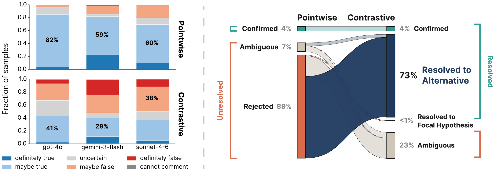
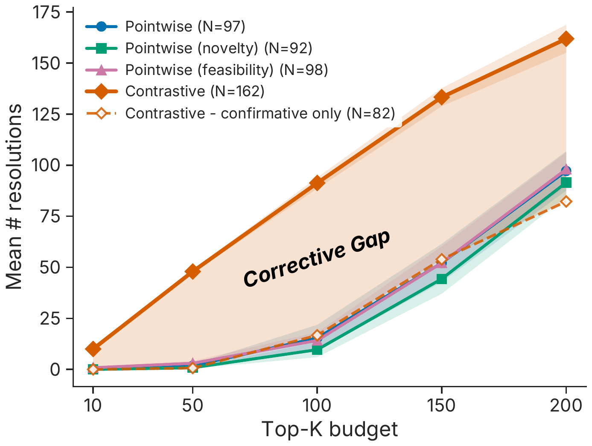
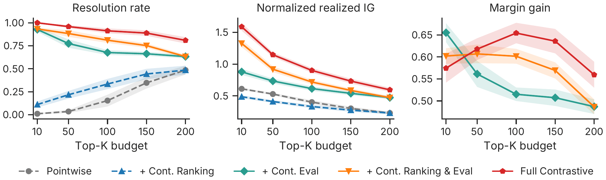

BLADE Mortgage
Given a poor credit score, self-employment status leads to…
- Higher denial rates than non-self-employed
- No different denial rates
- Lower denial rates than non-self-employed
NeurIPS 2026
Open-Ended Scientific Discovery over Competing Explanations
Cornell University *Equal contribution
TL;DR When evidence rejects a hypothesis, a discovery agent learns what is unlikely but not what is true instead. Scoring a question together with its competing explanations lets the same evidence identify the supported alternative.
The problem
After the same evidence
H1 rejected. What’s true instead? Unknown.
Resolved to H2. H1 ruled out.
Most LLM discovery agents explore a dataset by proposing one hypothesis at a time, such as “X is positively correlated with Y,” and testing it. Before the test, its belief in H1 is 0.73.
Coder, analyst, reviewer, and reviser agents write and run an analysis on the data, producing evidence.
Belief in H1 falls to 0.20, so the agent records a rejection. The evidence may bear on the alternatives, but with only H1 on the table the agent learns what is unlikely, not what the evidence supports instead.
This is the common case: 89% of the findings a pointwise agent ranks as most surprising are rejections.
Contrastive Discovery replaces the single hypothesis with a contrast set: the competing explanations for the same question. Belief is now spread across all of them.
Belief moves from H1 to H2, which now holds 0.81. The question resolves to H2 and H1 is ruled out, so one experiment both rules out an explanation and identifies the best-supported one.
Abstract
LLM agents are increasingly used for open-ended, data-driven scientific discovery, yet most of them evaluate hypotheses pointwise, testing each claim h only against its complement ¬h. When evidence rejects h, the agent learns that one explanation is unlikely but not which alternative the evidence supports. To recover that alternative, we introduce Contrastive Discovery, which replaces the single hypothesis with a contrast set, a scientific question paired with mutually exclusive and collectively exhaustive competing explanations. Each experiment is scored by how its evidence redistributes belief across the set, and the question is resolved when belief concentrates on one explanation. Because contrast sets change only the unit an agent proposes and scores, an existing agent can use them to re-evaluate evidence it has already collected or to guide its search.
Across six domains, 89% of the pointwise candidates with the largest belief shifts are rejections. On the same evidence, contrast sets resolve 73% of these candidates to a specific alternative. When contrast sets guide search, the agent resolves 67% more questions than pointwise surprisal under the same experiment budget. In a blinded study, 38 human experts chose the same explanation on 78% of resolved questions and on 82% of questions where the pointwise agent rejected its hypothesis and stopped. Together, these results support explicit competing explanations as a way for discovery agents to resolve more scientific questions from the same evidence and validation budget.
01 · Method
A pointwise agent asks “is this hypothesis true?” Contrastive Discovery asks “which of these explanations does the evidence support?”

Instead of one hypothesis, the agent writes out the competing explanations, called a contrast set. No two can hold at once, and together they cover the main outcomes the evidence should distinguish.
How does X relate to Y?
An LLM splits 100 points of belief across the explanations, once before the agent runs its experiment and once after it sees the results.
When one explanation ends up with at least 80% of the belief, the question is resolved. Here the evidence moved support from H1 to H2, a corrective resolution. A pointwise agent testing only H1 sees the same evidence and records just “H1 rejected.”
Contrastive Discovery
Resolved to H2. H1 ruled out.
Pointwise
H1 rejected. Which alternative is right? Unknown.
At step t the contrast set is 𝒞t = {ht,1, …, ht,M}, mutually exclusive and collectively exhaustive (MECE) within the scope of the question. The belief elicitor, an LLM separate from the agent, gives prior and posterior distributions pprior, ppost over the set (five samples averaged, explanations shuffled to reduce positional bias).
The discovery score is the contrastive belief shift, an entropy-scaled Bayesian surprise κt = DKL(ppost ‖ pprior) / log2 M, and min(κt, 1) is the reward for Monte Carlo tree search.
A question is resolved when maxm ppostm ≥ 0.80: confirmative if the leading explanation is unchanged, corrective if it changed. An explanation with posterior below 0.10 is ruled out.
Pointwise discovery is the M = 2 case {h, ¬h}: the complement contains every way h could be false and names none of them.
BLADE Mortgage
Given a poor credit score, self-employment status leads to…
Materials Project
Direct-gap vs. indirect-gap materials, Fermi energy is…
SDSS Galaxy
Controlling for galaxy axis ratios, the redshift effect on stellar velocity dispersion…
NLS Raw
Trend in vehicle market value across 1985 / 1990 / 1996 is…
Contrast sets change the unit an agent proposes and scores, not its architecture.
Re-evaluate evidence the agent has already collected: keep its hypothesis as one explanation, generate the alternatives, and re-elicit belief. No new experiments, no change to the agent.
Replace the agent’s hypothesis and score with a contrast set and its belief shift, so the search is rewarded for evidence that tells the competing explanations apart.
02 · Results
We ran pointwise and contrastive agents on six real datasets, from materials science to mortgage lending, giving each the same budget of 200 experiments.
Mostly rejections. Of the 50 findings a pointwise agent ranks as most surprising, 89% are rejections: the evidence says the hypothesis is unlikely, and nothing more. Re-read with contrast sets, on the same evidence and with no new experiments, 73% of them point to a specific alternative instead.

Prior collapse. Under each of three belief elicitors, at least 59% of pointwise proposals get a “maybe true” prior (82% when gpt-4o both proposes and elicits). Explanations in contrast sets spread across the prior scale; the largest bin holds 41%. With little room to rise, and a normalizer inherited from AutoDiscovery that divides every shift by the larger headroom, a confirmation cannot score as high as a rejection.
The top 50. Among the top-50 candidates by pointwise surprisal (from 200 nodes), 4% are confirmed, 7% ambiguous, and 89% rejected.
Re-reading the same evidence. For each pointwise hypothesis we build a post-hoc contrast set that keeps the original hypothesis as one explanation and adds alternatives from the same proposer. The generator sees the hypothesis, the dataset’s variables, and the same prior context, but not the analysis, its output, or the verdict. On identical evidence, 73% of the 50 resolve to an alternative, and unresolved outcomes drop from 96% (counting only confirmations as resolved) to 23%.
Yes. With the same 200 experiments, the agent resolves 161.9 questions on average, against 97.2 for pointwise surprisal: 67% more. Pointwise agents resolve similar numbers whether they rank hypotheses by surprisal, novelty, or feasibility. Almost all of the extra are corrections, where the evidence moved support away from the explanation favored beforehand. A pointwise agent records those only as rejections.

Setup. Six datasets: Materials Project, SDSS Galaxy, BLADE Mortgage, BLADE Conversation, DiscoveryBench Requirements Engineering, and DiscoveryBench NLS Raw. Every method uses the AutoDiscovery scaffold with a gpt-4o backbone, Monte Carlo tree search, and N = 200 experiments. Pointwise baselines guide search by surprisal, or by LLM-judged novelty or feasibility.
Counting. Each method ranks candidates by its own score and we count resolved questions among its top K; a confirmed pointwise hypothesis counts as resolved. At K = 200, Contrastive Discovery resolves 161.9 against 97.2 for pointwise surprisal (+67%). Curves are means over the six datasets, bands ±1 s.e.
Where the extra comes from. Counting confirmative resolutions alone, Contrastive Discovery is at or below pointwise (82.2 vs. 97.2), plausibly because its search reward values confirming an already-leading explanation less. The gain is almost entirely corrective.
No loss of verdicts. 0.91 of the top-200 contrastive units reach a verdict (resolved or ruled out) against 0.82 of pointwise units (confirmed or rejected), and the rate is higher in all six datasets.
Mostly from judging the evidence against every explanation at once. Variants that judge it against only the focal hypothesis reach a resolution rate of at most 0.22 at K = 50; variants that judge it against the full contrast set reach 0.77 to 0.96. Building the alternatives during discovery, so they shape the question and analysis, leads on all three metrics at almost every budget.

Three factors. Ranking: pointwise surprisal vs. the contrastive belief shift κt. Evaluation: the focal hypothesis alone vs. the full contrast set. Construction: a contrast set added post hoc to a pointwise hypothesis vs. one built during discovery. The five variants are pointwise only, +contrastive ranking, +contrastive evaluation, +both, and full Contrastive Discovery.
Measures. Resolution rate is resolved questions divided by K. Realized information gain is κt (with M = 2 under pointwise evaluation, not bounded by 1). Margin gain is how much the gap between the leading explanation and the runner-up grows; it is defined only under contrastive evaluation.
A ranker–evaluator mismatch. Contrastive ranking raises resolution under either evaluator, but with pointwise evaluation it lowers information gain: the ranker picks evidence that is informative about the alternatives, and the evaluator collapses it back onto one claim. Full Contrastive Discovery leads on all three measures at nearly every budget.
Compatible with pointwise surprisal. Scoring the highest-prior explanation of each contrast set with pointwise surprisal, the two scores agree (Spearman ρ = 0.675). Where they disagree, candidates ranked higher by the contrastive score are often corrective and those ranked higher by surprisal confirmative.
03 · Validation
A resolution records where one model’s belief settled. We checked it against people and data that do not depend on that model.
Mostly. 38 experts, shown only the question, the explanations, and the evidence, picked the same explanation on 78% of the questions Contrastive Discovery resolved, and on 82% of the questions a pointwise agent had simply rejected.
Share of questions where the expert majority chose the same explanation as Contrastive Discovery.
Study. 38 evaluators with MS or PhD degrees judged 60 questions across all six datasets, blinded to every method’s beliefs and verdicts (median 8 raters per item; majority vote). For the pointwise comparison we use the same items, evidence, and judgments, evaluating only the explanation with the highest prior.
| Questions | n | Experts agree |
|---|---|---|
| Contrastive resolved | 51 | 40 (78.4%) |
| Contrastive unresolved | 9 | 3 (33.3%) |
| Pointwise confirmed | 32 | 23 (71.9%) |
| Pointwise rejected | 22 | 18 (81.8%) |
| Pointwise ambiguous | 6 | 2 (33.3%) |
| All items | 60 | 43 (71.7%) |
Disagreements. Of the 17 disagreements across all 60 items, experts favored a competing explanation in only three; the rest were inconclusive or split. Where pointwise confirmed its hypothesis, experts endorsed 23 of 32 findings for each method.
Set quality and controls. Evaluators judged contrast sets well formed on 80% of ratings, flagged a missing alternative on 15%, and rated the result a substantive finding on 51%. They reliably flagged planted defective sets, and pairing questions with unrelated evidence dropped appropriate-analysis ratings from 73% to 7%.
14 of 14
Flip the sign of the evidence and the answer flips. Remove the evidence and nothing resolves.
55% → 89%
Three model families pick the same answer far more often after seeing the evidence than before.
53% → 0.6%
If the right explanation is left out of the set, a “none of these” option cuts wrong answers to under 1%.
Following the evidence. We gave the belief elicitor only the numerical results for 14 claims adapted from DiscoveryBench with documented findings, with no analyst text, identical wording across conditions, and randomized order. Given the coefficient and confidence interval, it ranked the documented answer first in all 11 cases where an interval could be recovered. Reversing the evidence’s sign reversed the resolution on all 14 claims; removing the evidence prevented resolution. Separately, recomputing 331 analyses from raw data reproduced the agent’s reported statistics on 96.1%.
Across model families. Re-eliciting beliefs on 180 contrast sets with gpt-4o, gemini-3-flash, and claude-sonnet-4-6, all three chose the same leading explanation on 55.0% of sets before the evidence and on 88.9% after, and agreement rose in every dataset.
Incomplete sets. For 163 questions the system had resolved correctly, with the supported explanation identified from recomputed statistics, we removed that explanation and re-elicited. The system declined to resolve on 46.6% and resolved to a wrong explanation on 53.4%, mostly “no detectable effect.” Adding the abstention option “none of the listed alternatives matches the evidence” reduced false resolutions to 0.6%, usually by flagging the omission. On intact sets abstention was never selected, and 162/163 resolved to the supported explanation (159/163 without it). The main results do not use abstention; a strict majority of experts flagged a missing alternative in only 6 of 60 sets.
04 · Robustness
We checked the obvious ways the gain could be an artifact.
157.8 vs. 161.9
Scoring each explanation separately with the pointwise scorer resolves nearly as many questions, so joint scoring accounts for little of the gain. An agent can keep its existing pointwise scorer.
148.3 vs. 87.7
Given the same total token budget, Contrastive Discovery still resolves far more.
Every threshold
It resolves more at every matched resolution threshold, in every dataset.
2.6% of questions
Among the questions both methods reached, pointwise agents proposed the complete set of alternatives for only 2.6% at matched budget.
Joint vs. independent scoring. Keeping the contrast sets but scoring each alternative separately with the pointwise elicitor and its threshold resolves 157.8 questions against 161.9 for joint scoring, and both select the same leading alternative on 89.3% of sets. An agent can keep its existing pointwise scorer.
Cost. Cost per candidate is similar (61.1k tokens for contrastive vs. 52.8k for pointwise). Capping both at the same total tokens, Contrastive Discovery resolves 148.3 against 87.7; at the same dollar cost, 145.8 against 92.2.
Thresholds. On 1,543 cases, each resolution threshold from 0.60 to 0.90 is paired with the pointwise confirmation threshold that accepts the closest fraction of the same evidence. Contrastive Discovery resolves more at every pair and in each dataset. Our 0.80 matches a pointwise 0.695, stricter than the 0.625 we use, so the reported gain is conservative.
Implicit contrast sets. A separate LLM judge compared all pointwise hypotheses against our contrast sets. Among questions both methods reached, the complete set appears for 2.6% at matched budget and 15.4% when pooling runs at 4–6× the budget. The explanation the evidence eventually supports appears among pointwise hypotheses 52.0% of the time when the evidence confirms the prior leader, but only 25.4% when it corrects it.
Scope. Experiments use tabular, observational datasets and a single base agent with a gpt-4o backbone, so a resolution is a statistical rather than a causal finding, and resolution is measured with LLM-elicited beliefs. The gains remain to be verified in laboratory experiments and longer-horizon interventions.
Agentic science should represent discovery not as a stream of accepted or rejected claims, but as resolving among competing explanations.
Citation
@inproceedings{liu2026contrastive,
title={Contrastive Discovery: Open-Ended Scientific Discovery over Competing Explanations},
author={Ziang Liu and James J. Kim and Yijia Dai and Jennifer J. Sun},
booktitle={The Fortieth Annual Conference on Neural Information Processing Systems},
year={2026},
url={https://openreview.net/forum?id=EloJA4f4FX}
}